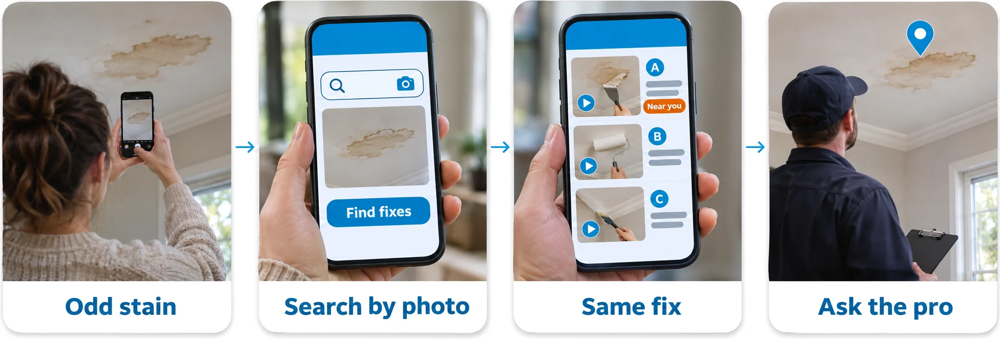
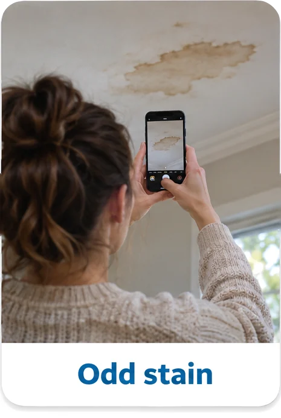
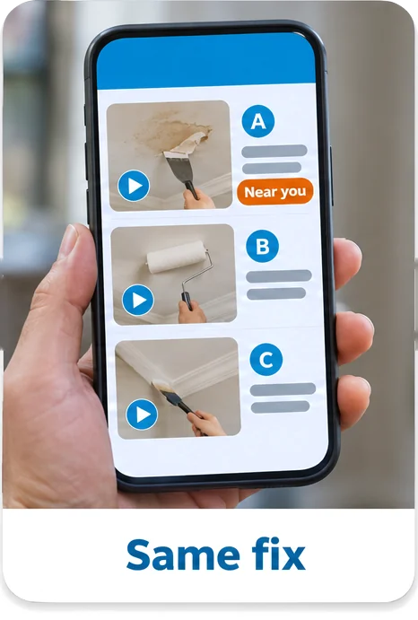
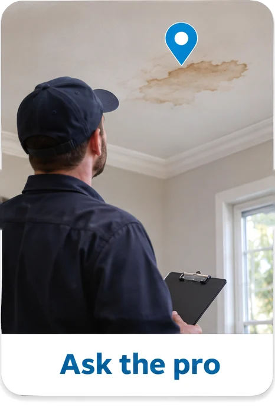

Find a Similar Fix
GrowthHarder, but possible

- 1

A homeowner photographs an odd stain on the ceiling.
- 2

She searches by photo and taps Find fixes.
- 3

She sees real local jobs that fixed the same thing.
- 4

She asks that pro to come.
Problem
I search my problem and cannot find who has fixed one like it near me.
What you gain
My finished jobs become answers people can find, so new customers find me.
Brings the next customer
Every job I finish becomes a page that brings the next homeowner with the same problem.
Why build it
The bet is that people search their problem before they search a pro, and this puts providers on ServeUs in the answer.
Who has it
Homeowners with a strange noise or leak, and the pros who have fixed it.
Also inside
- Pick a similar house
- Answers to Google problem searches
- Short symptom videos
- Follow a pro you like